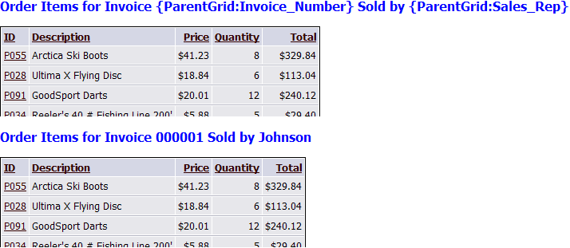

Displaying Field Values in GridLinkers
It is possible to display the field values from the currently selected record in a parent grid in a child grid when parent and child grids are placed in a gridlinker or tabbed gridlinker. The following example references 2 tables from the AlphaSports sample database. The parent grid is based on the OrderHeader table. The child grid is based on the InvoiceItems table.
The top image displays HTML text and part of the InvoiceItems grid as it appears in the Grid Builder. The bottom image shows the same grid inside a gridlinker after invoice number 000001 was selected in the OrderHeader grid.

You can place these field references into any static HTML text. The syntax is very simple:
{ParentGrid: fieldname } displays HTML encoded text.
{ParentGrid:Raw: fieldname } displays raw unencoded text, which you might use in an URL.
See Also
Creating GridLinker Components, Creating Tabbed GridLinker Components
Limitations
Web publishing applications only.